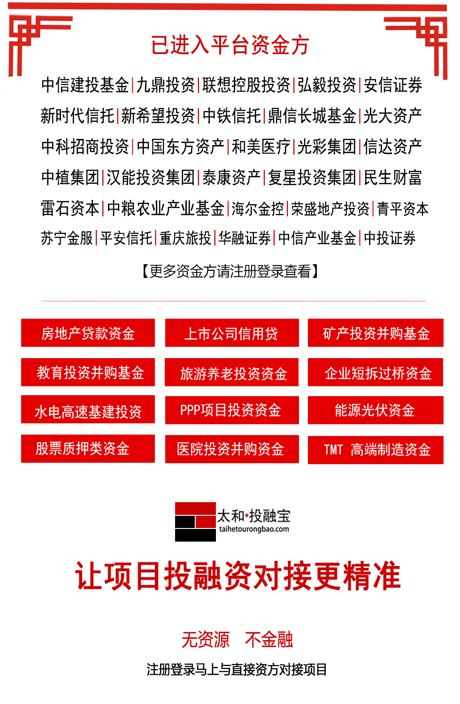

平台创始人及团队曾在某央企控股投资公司从事投融资工作多年，在工作期间经常和来自全国各地的项目负责人或渠道商（中间人）进行业务交流，创始人及团队发现项目方或渠道商（中间人）在寻找资金的时候普遍存在对资金方的资金投向及偏好不清楚，投融资信息错配问题；项目方不仅花费大量时间和精力，还冒着被虚假资金方、平台公司骗取评估费、公证费、交通费、律师费等相关费用风险， 最后却无法找到与之相匹配的资金方，所以为了解决此类问题，太和投融宝平台由此建立,目的只为项目方、渠道方（中间人）能更高效、更可信、更直接的找到资金投向及偏好相一致的资金方，最终实现投融资信息、资源、人脉对接的透明化。
一、解决金融行业投融资信息不对称的问题。
在金融投资圈经常出现“XX资金方直接投资”,“XX上市企业寻并购标的”,“XX房地产企业需要贷款”等现象,在业务对接签署FA协议之前，以挣取财顾费或者骗取评估费、公证费等相关费用为目的平台公司或者居间人都会尽可能隐藏资金方信息，从而造成投融资双方信息匹配出现不对称的情况；太和投融宝平台建立的主要目的是改变现有规则，使优质的项目负责人或渠道方能直接对接上相匹配并且真实的资金方，降低和杜绝项目方被虚假资金方（或平台公司）骗取评估费、保证金、交通费、尽调费、公证费、律师费等风险。
二、解决金融行业资源和人脉变现问题。
金融从业者虽有一定的人脉圈子和资源，但毕竟是小众群体、存在一定局限性，其在业务开展过程中经常会出现部分资源无法对接，使资源或人脉造成闲置浪费而无法变现，太和投融宝就是要建立一个金融圈内的项目、资金、人脉资源共建、共享、共赢平台，使进入平台的资源和人脉能够被人所需，产生价值，最终实现资源的优化配置。
三、解决金融行业从业者、渠道方（中间人）在进行业务对接过 程中时间消耗、飞单、跳单问题。
目前部分具有优质项目资源的渠道方（或中间人）在寻找真实资金方时候，无法甄选出真实的资金方，在与虚假资金方（或平台公司）进行长时间业务对接后，所对接的业务不仅没有对接成功，浪费大量时间和精力，而且自己付出的努力根本无法获得任何收益回报。太和投融宝的建立就是让渠道方优质的项目能找到多个与之匹配的真实的资金方，提高业务对接成功率，获得收益，同时也为防止和杜绝中间人过多造成的信息中断、飞单和跳单风险。
